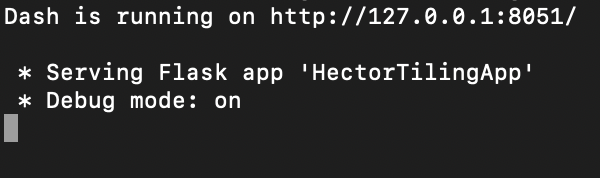
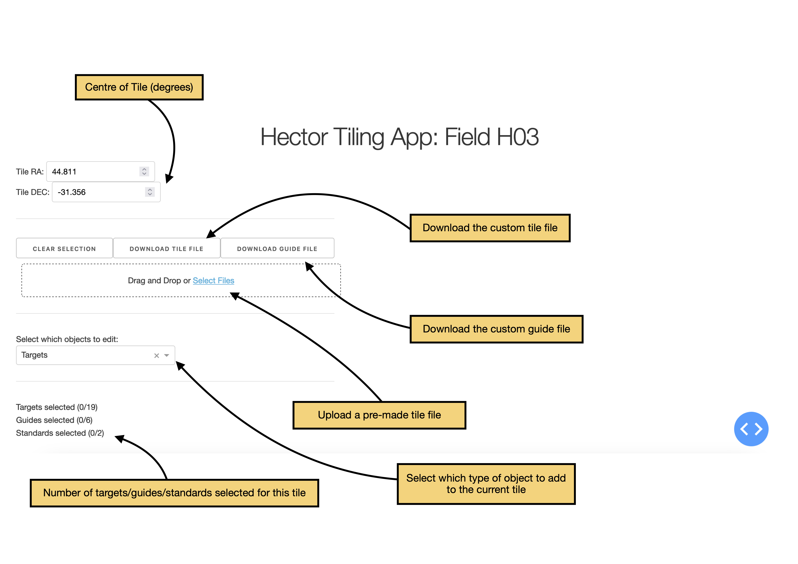
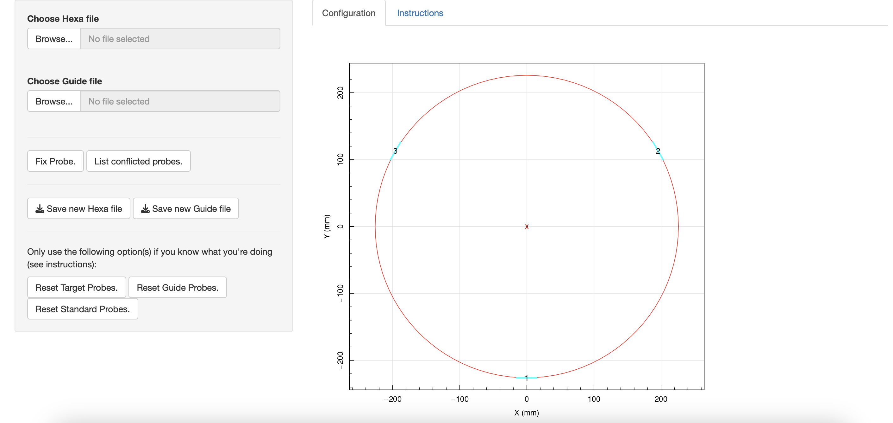

Interactive tools
There are two interactive tools which have been built to help with running these tools. One of these allows you to select galaxies and make a brand new tile, and the other allows you to configure magnets on the field plate by hand.
Selecting galaxies to create a tile from scratch
The script interactive_apps/HectorTilingApp.py launches a dash/plotly app to create a Hector tile from scratch by clicking on galaxies, guide stars and standard stars. These tiles can then be saved and run through the pipeline to make a set of files which can be observed at the telescope. This is particularly important for the beginning of every observing run, where two special "SNAFU" tiles are needed for the first and second halves of the first night.
Starting the app
The app needs a catalogue of galaxy targets, standard stars and guide stars for a given region of sky. You also need to pass the name of the region you're running. At the command line, run:
python interactive_apps/HectorTilingApp.py /path/to/target_catalogue.csv /path/to/standard_star_catalogue.csv /path/to/guide_star_catalogue.csv field_name
Note that the code expects that the standard star and guide star catalogues name have "standard_star" and "guide_star" in their filenames, and will error if this isn't the case. This was added to catch the bug where you pass these two catalogues to the code in the wrong order!
You should get the following in the terminal:

Copy the web address (in this case http://127.0.0.1:8051/) into a browser. Note that the exact port number you see might be different! You should see the following:


You can now move the Hector Field of View around by using the "Tile RA" and "Tile DEC" values at the top. Note that at low declinations, the FoV will appear more like an ellipse than a circle- this is correct and nothing to worry about!
You can add a given galaxy to the tile by clicking on it. Click on it again to remove it. When you're done picking galaxies, change the target selection box to standard stars or guide stars and continue.
When you've selected a few galaxies and stars, you'll see something this:

Note that this image is flipped up/down compared to when you look at Hector on the telescope- so the cable gap at the bottom of the plate is actually
Every tile must have all hexabundles in use at all times. This means that every tile must contain 19 galaxy targets, 2 standard stars and 6 guide stars. It's okay to select more guides and standards than this: you can select which are actually allocated hexabundles during the Observing pipeline.
Notes and Tips
- Note that the slider on the bottom marked "Zoom Level" makes the entire interactive box smaller or larger. If you click and drag a square on the data then you can zoom in on a specific region of the field.
- For a SNAFU tile, we need a guide star located 5" from the centre of the tile. I find it easiest to pick a guide star, then take 5" from its declination and place the tile centre at those coordinates.
- Sometimes it can be a bit fiddly to click on a galaxy to remove it. Apologies about this, but it will work eventually!
- As of November 2023, we're only using guide stars within the central 70% of the Field of View. Guides outside of this radius are automatically removed from the guide file by the pipeline.
- For fields at low declination, the Hector FoV will appear like an oval rather than a circle. This is intended! It's a consequence of mapping a a fixed circular object (the Hector FoV) with a physical width onto a spherical surface (the sky). At the poles, lines of constant RA get closer together and so the radius of the FoV has a \(\cos(\delta)\) scaling factor.
Configuring a Field Plate Interactively
Open the file interactive_apps/app_V3.R in R-studio. At the top, click "run app" and a pop-up window should appear like below. I usually also select "open in browser".

After selecting a tile file and a guide tile in the top left corner, you'll see something like this:

Galaxies are coloured in blue, guide stars in yellow and standard stars in red. Double click on the head of a probe you want to rotate, then click again at the desired angle. Click "Fix Probe" on the left to save this new angle. Repeat until you have a finished configuration! The text above the "Fix Probe" button will let you know the number of conflicts in the field. This must be zero for a finished tile. You can download your tiles by clicking the "Save new Hexa file" and "Save new Guide file" on the left.
Note that the code does not check that probes are orientated outside the field of view. You must ensure that all the magnets are actually on the plate before continuing.
At the bottom left, there are advanced options to get the code to give you a "first guess" for each set of probes. When starting a field completely from scratch, this first guess is often not a bad first approximation and using it can speed up the process.